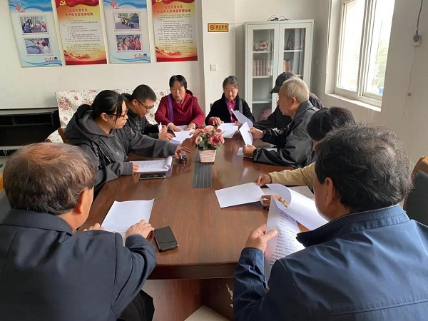

路南区永红桥街道开展全民终身学习活动
浏览次数：40 发布时间：2020年11月17日
为落实唐山市社区教育学院全民终身学习活动周要求，营造全民终身学习的良好环境，路南区永红桥街道针对辖区特色开展了一系列丰富多彩的全民终身学习活动。
富庄东里社区
为进一步巩固疫情防控持续向好形势，结合疫情防控常态化要求，富庄东里社区组织社区工作人员、网格员、楼门组长、志愿者开展疫情常态化专题学习，进一步确保疫情防控形式的稳定。
建国里社区
《民法典》是人民的法典，是人民权利的体系化表达。建国里社区组织社区工作人员学习了《民法典》，让《民法典》走进百姓的心中，营造办事依法、遇事找法、解决问题用法、化解矛盾靠法的法治氛围。
增盛楼社区
结合即将到来的“11.9”消防安全宣传日，社区工作人员为居民们整理了消防安全小常识，让大家了解常见的安全隐患，防范安全风险，最大限度减少意外伤害，构建和谐文明社区生活。
富民楼社区
富民楼社区党支部党员、辖区读书爱好者开展了以“书香社区全民阅读”为主题的读书交流活动。大家就自己阅读的各类图书进行分享，还就十九大报告读本、党章等十九大精神图书发言交流，畅谈感想心得。此次活动的开展进一步营造学习型社区氛围，提升了居民的文化素质,丰富了居民的文化生活。
建国楼社区
建国楼社区组织全体社区人员及部分居民在会议室一起学习了《公共文化服务保障法》《公共图书馆法》及“创建国家公共文化服务体系示范区”宣传手册，为全民终身学习活动周营造良好的舆论氛围。

本次活动周宣传了唐山教育信息网思想，树立了终身学习理念，在辖区内营造了“人人皆学、时时能学、处处可学”的浓厚学习氛围。
供稿：路南社区教育分院
责任编辑：张启新